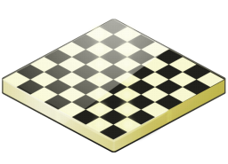

Las torres, caballos, alfiles, damas y peones tienen diferentes formas de mover. Una dama puede hacer todo lo que una torre, y más. Una torre con la ayuda de su rey puede dar jaque mate al rey enemigo en un tablero vacío, mientras que el alfil o el caballo no pueden. No sorprende entonces que una dama se considere superior a una torre, que a su vez tiene un valor superior a alfil o caballo.
|
 |
Saber cuándo conviene cambiar piezas es más complicado de lo que parece.
El cambio no es solamente un cálculo numérico, pues entran en juego ideas posicionales y dinámicas que hay que considerar.
Un cambio nunca es equilibrado, aunque lo parezca y por eso no siempre es fácil de valorar.
|
|
A la hora de analizar una partida, se pueden distinguir varias fases en las que los objetivos y la forma de jugar son diferentes:
- Apertura
- Medio juego
- Final
|
|
La teoría de ajedrez está muy bien, pero lo más importante es jugar.
El juego sin el estudio convierte al ajedrez en un juego de azar en el que las venturas y desventuras se presentan accidentalmente (o más bien eso es lo que nos parece), pero el estudio del ajedrez sin la práctica lo convierte en una afición estéril.
|
|
La estrategia en el ajedrez consiste en establecer y lograr metas a largo plazo durante la partida, por ejemplo, organizar correctamente las piezas propias, mientras que la táctica se concentra en la maniobra inmediata. |
|
Además de los juegos informales, sin más límite de tiempo que la paciencia de los propios jugadores, el ajedrez también se juega con un control de tiempo, en su mayoría por jugadores de club y profesionales. Te contaremos algo sobre las diferentes duraciones de las partidas y algunos consejos para jugar con reloj. |
|